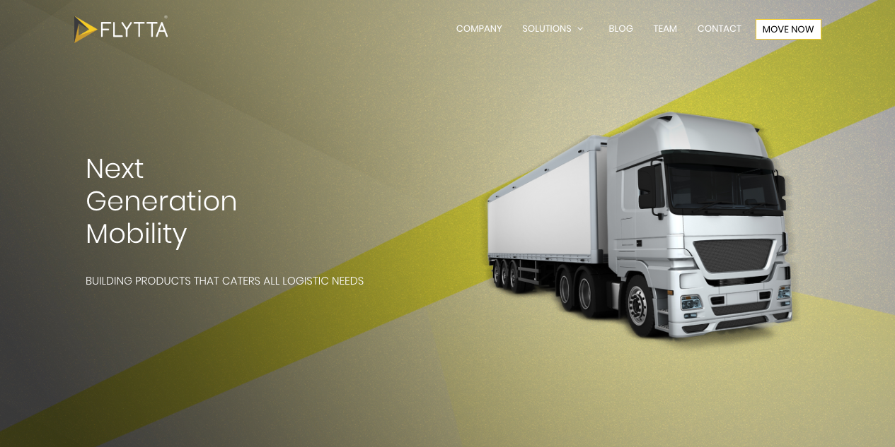
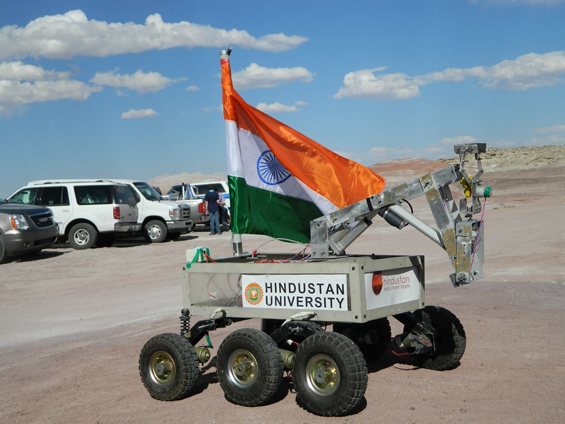
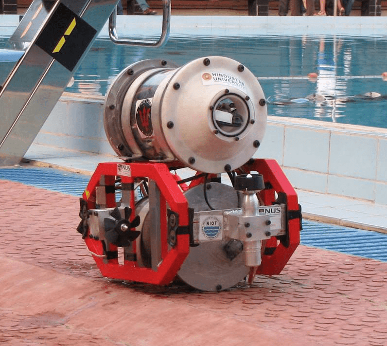

ML & deep learning
Computer vision, object detection, sequence models, transformers, entity resolution, physics-informed ML and document intelligence.
I’m Gokulavasan Murali, a product and engineering architect with 10+ years shipping products from 0→1 — from on-device models to multi-agent platforms processing millions of actions.
Explore my workI own product direction for enterprise desktop automation: vision-first RPA, agentic workflows and ERP-connected finance processes. I architect deterministic agent tooling with dynamic context switching, guardrails, MCP servers and tool calling.
Explore LaunchAI.work ↗Modular agent architectures with hot-swappable model components.
A timeline of the systems I’ve shipped,
the teams I’ve led and the skills behind them.
Shipped YOLOv2 object detection with transfer learning and on-device inference for instant mobile relocation estimates. Built LSTM anomaly detection on Raspberry Pi sensor streams for real-time cargo damage prevention.
Scaled the company to 22 people and raised $1.5M Series A. Built corporate portals, vendor systems and Android/iOS apps.
Built multi-format compliance extraction pipelines across all US states, orchestrated with Airflow. Evaluated LEGAL-BERT for contract review and built Neo4j knowledge graphs with automated entity linking.
Developed an audio-visual deep learning framework for real-time speech synthesis and 3D face-driven video generation using one-shot learning.
Owned technical direction for LEO orbit prediction using physics-informed ML and synthetic data pipelines. Led entity resolution, RAG and aspect-based sentiment R&D with HuggingFace transformers.
Architected document intelligence spanning OCR, NER, dewarping and summarization; built connectors handling terabytes of data and a testing framework for Tamr. Additional work included facial re-enactment and satellite-image annotation.
Led 13 engineers shipping AI product verticals from 0→1. Architected a desktop sales platform with five specialized agents for lead research, enrichment and multi-channel outreach using existing user sessions.
Built self-serve, drag-and-drop multi-agent workflows with context engineering for task continuity. Led post-acquisition integration and cloud platform migration.
The agentic self-serve platform drove the company’s acquisition; workflows improved sales by 25% for non-standard lead generation.
Architecting deterministic workflows, agent harnesses and dynamic context switching. Establishing guardrails, prompt templates, MCP servers and function calling as organization-wide standards.
Defining evaluation strategy for small vision-language and language models, including fine-tuning, benchmarking, agent tracing and LLM observability.
Computer vision, object detection, sequence models, transformers, entity resolution, physics-informed ML and document intelligence.
Multi-agent orchestration, context engineering, RAG, MCP, tool calling, deterministic execution and guardrails.
Durable pipelines, distributed systems, LLM observability and engineering leadership from initial architecture to production.
An MCP security layer that blocks malicious or vulnerable package installs requested by AI agents.
A curated directory of open-weight small language models with use-case filters and benchmarks.
An open-source framework for replacing existing backend architecture.
Exploring the possibilities of small language models. Slides and resources from PyConf Hyderabad 2026.
Explore the talk
Co-founded a relocation company and led its technology as CTO, building products for enterprise mobility and logistics.

Making a city's water story visible through data, maps and a web-based monitoring experience.

Led technical and software work on rover systems, bringing together computer vision, ROS and ground control.

Founded and led a team building an autonomous underwater vehicle, working on imaging and underwater mapping with ROS.